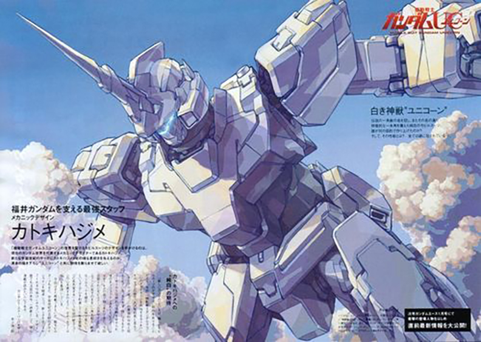

Home | Exia Gundam | Unicorn Gundam | Strike Gundam | Barbatos Gundam
The RX-0 Unicorn Gundam is the titular prototype mobile suit of the Mobile Suit Gundam Unicorn novel, its OVA adaptation and the television re-cut. Developed by Anaheim Electronics for the Earth Federation, the machine concealed a secret that could shake the future of all humanity,[1] for it was the key to opening Laplace's Box. The suit is piloted by Banagher Links after the head of the Vist Foundation and his father, Cardeas Vist, entrusted it to him at the dawn of the Third Neo Zeon War in U.C. 0096
Click Here for more Information